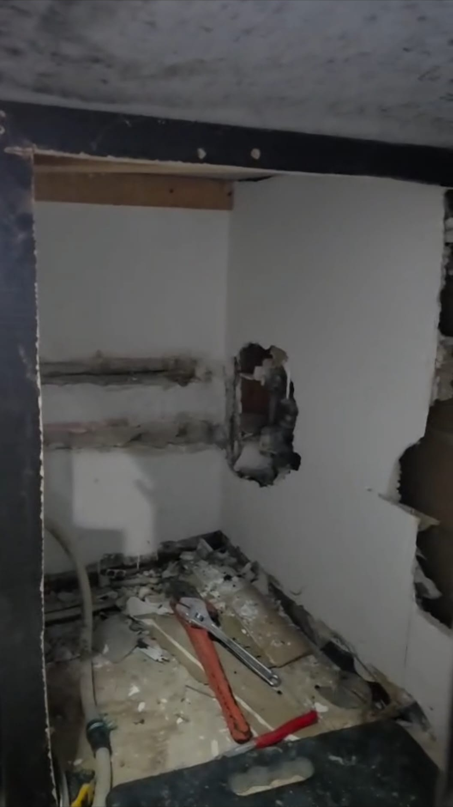
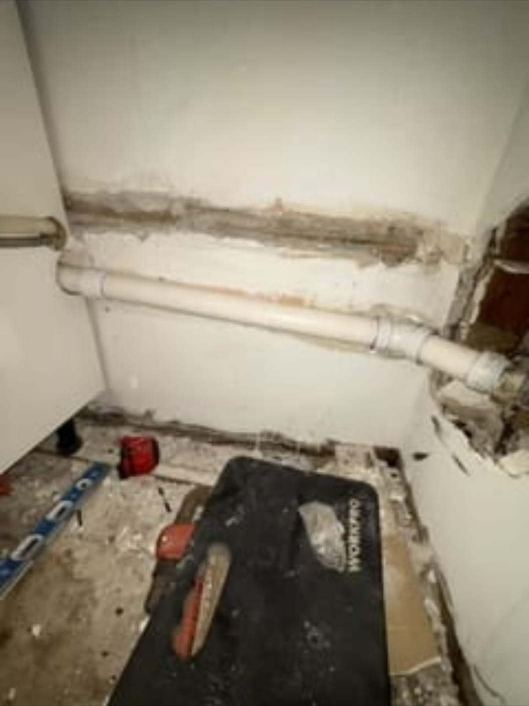
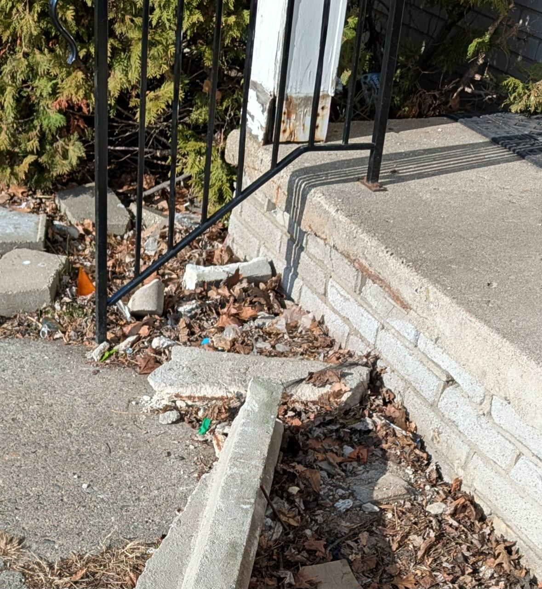
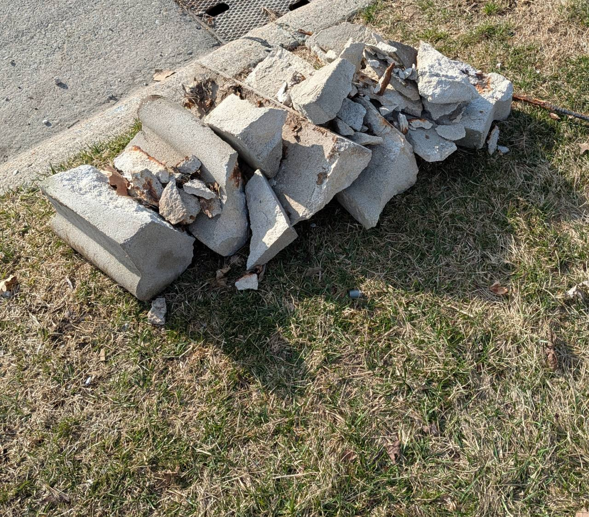
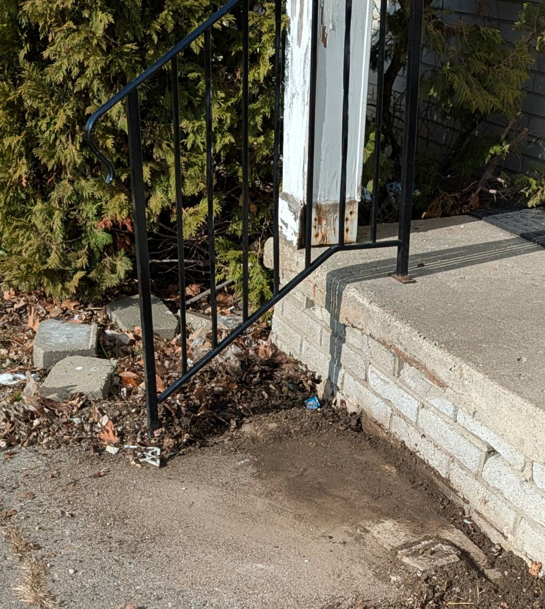
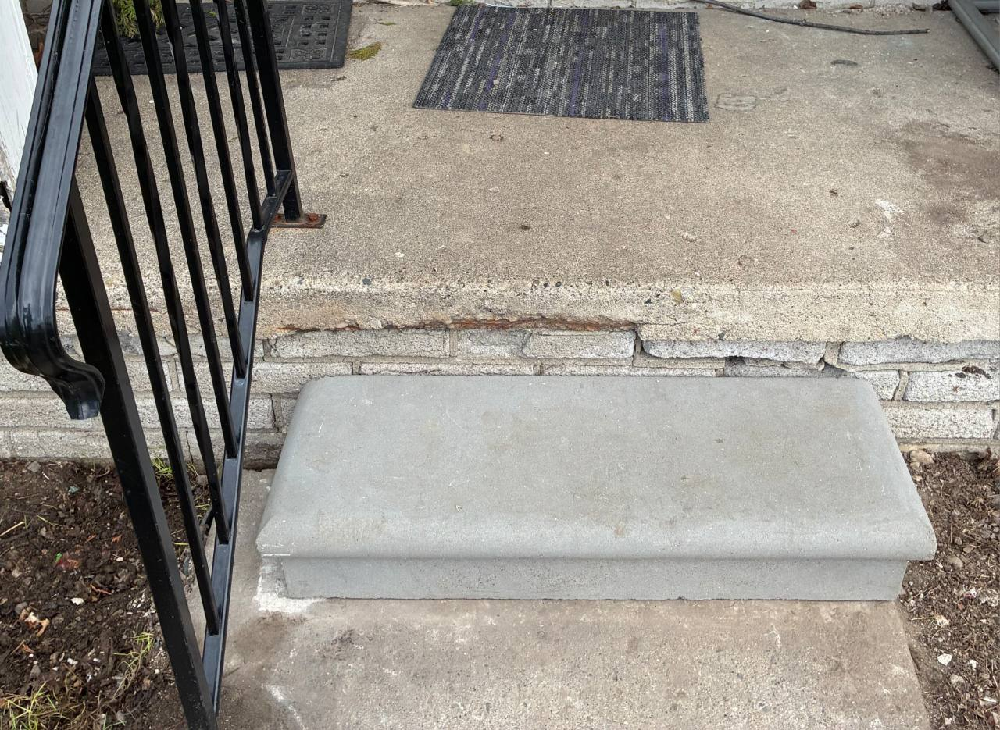

Our work
See the repairs we’ve helped families complete and read their testimonials.
A new bathroom floor
The bathroom still had its original toilet, installed more than 27 years ago. It had been out of service for years.
The tile installer took on this bathroom repair at an exceptionally reasonable rate. He approached the job like an artist, bringing meticulous care to every cut and joint. He also arranged for tiles from another job site to be donated to Magen Habayit. With the tiles provided free of charge, both the family and Magen Habayit paid less for the repair.
Seeing the right craftsman and the donated materials come together for this family was an inspiring example of hashgacha pratis (Divine Providence).
Before
During
After
Before & after
Pipe repair.
A look at the work before and after replacing a pipe, with the surrounding wall still open.

Before

After pipe replacement
A repair, step by step
A step toward a safer home.
A closer look at a step repair, from damaged concrete to the completed replacement step.

Before

Damaged material removed

Area cleared

Completed repair
Families' experiences
Help when it mattered most.
Families share their experiences with our founder, Isaac.
“Due to a serious leak in the kitchen that went down to the basement, and a moldy smell began to spread. In a house with children, this is an emergency. We called Isaac from Magen HaBayit and he contacted a licensed plumber, and in a short time they came to take care of the problem. It was much-needed help. Isaac is a champion at providing tools for any emergency.”
“Twice we had some serious plumbing issues in our home. A leaking faucet handle that was traveling under the sink and down into the basement. Isaac from Magen Habayit was able to switch out the faucet for one I had on standby but was unable to install. Then a couple months later on Rosh Hashanah a slight fracture on a connecting part for the instahot caused a significant leak into the basement. With the costs of Tishrei weighing down on our shoulders we turned once again to Isaac and he quickly jumped into action, speaking to a licensed plumber who was able to fix it the next day. B'H. The plumbers did high-quality work and were very professional.”